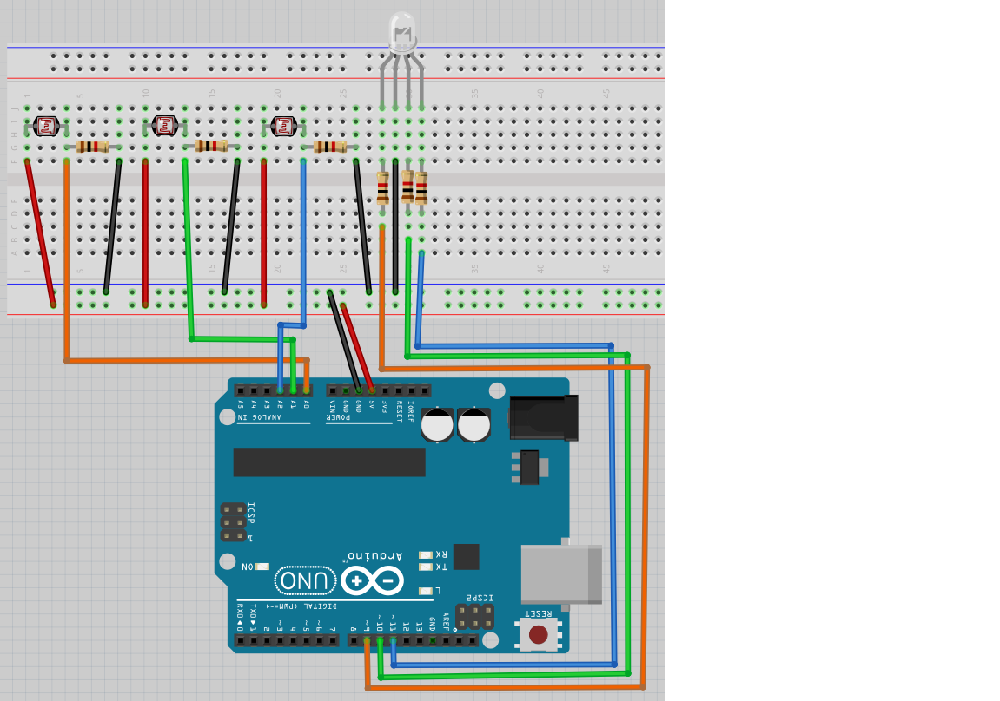

Lektion 18: Användning av en LDR¶
Under den här lektionen ska vi använda en LDR!
18.1. Elkretsen¶

Koppla tillsammans som schemat och förbind Arduino till en dator. Det er den långsta ben av RGB ljusdiod som skulle kopplades till GND.
18.2. Ett lysdiod¶
Ladda upp den här koden:
const int pin_ldr_1{A0};
const int pin_led_r{9};
void setup() {
pinMode(pin_ldr_1, INPUT);
pinMode(pin_led_r, OUTPUT);
}
void loop() {
const int ldr_1{analogRead(pin_ldr_1)};
const int ljus_styrka_r{ldr_1 / 4};
analogWrite(pin_led_r, ljus_styrka_r);
}
Kör koden och rör LDR:er. Vad ser du?
18.2. Svar¶
Om du inte rör LDR:er är färgen svagt rött (men det kan bero på RGB lysdiod, så den kan också vara grönt eller blått). Om du fördystra eller lyser på den första LDR kan du ändra ljusstyrka.
18.3. Vad koden betyder¶
Kolla igenom kod.
Kan du översätta varje mening till svenska?
18.3. Svar¶
Kära dator, minns en variabel kallades
pin_ldr_1, som är en helvärtstal som kan inte ändrar sig, med initiälvärdA0
Kära dator, minns en variabel kallades
pin_led_r, som är en helvärtstal som kan inte ändrar sig, med initiälvärd9
Kära dator, göra detta mellan parantheser ett gång i början av programmet
Kära dator, Arduino stift
pin_ldr_1är för att mäta el
Kära dator, Arduino stift
pin_led_rär för att schicka el
Kära dator, göra detta mellan parantheser för evigt, efter
setupär färdigt
Kära dator, minns en variabel kallades
ldr_1, som är en helvärtstal som kan inte ändrar sig, med initiälvärd det som Arduino läser av stiftpin_ldr_1
Kära dator, minns en variabel kallades
ljus_styrka_r, som är en helvärtstal som kan inte ändrar sig, med initiälvärdljus_styrka_rdelad med fyra
Kära dator, schick
ljus_styrka_rel till Arduino stiftenpin_led_r
18.4. Två lysdiod¶
Lägga till:
- en variabel kallades
pin_ldr_2med initiälvärdeA1 - en variabel kallades
pin_led_gmed initiälvärde10 - Få andra riktning av LDR:er att ändra en annat färg, likadant första riktning med första färg
18.4. Svar¶
const int pin_ldr_1{A0};
const int pin_ldr_2{A1};
const int pin_led_r{9};
const int pin_led_g{10};
void setup() {
pinMode(pin_ldr_1, INPUT);
pinMode(pin_ldr_2, INPUT);
pinMode(pin_led_r, OUTPUT);
pinMode(pin_led_g, OUTPUT);
}
void loop() {
const int ldr_1{analogRead(pin_ldr_1)};
const int ldr_2{analogRead(pin_ldr_2)};
const int ljus_styrka_r{ldr_1 / 4};
const int ljus_styrka_g{ldr_2 / 4};
analogWrite(pin_led_r, ljus_styrka_r);
analogWrite(pin_led_g, ljus_styrka_g);
}
18.5. Tre lysdiod¶
Lägga till:
- en variabel kallades
pin_ldr_3med initiälvärdeA2 - en variabel kallades
pin_led_bmed initiälvärde11 - Få knappen av LDR:er att ändra en annat färg, likadant första riktning med första färg
Svar¶
const int pin_ldr_1{A0};
const int pin_ldr_2{A1};
const int pin_ldr_3{A2};
const int pin_led_r{9};
const int pin_led_g{10};
const int pin_led_b{11};
void setup() {
pinMode(pin_ldr_1, INPUT);
pinMode(pin_ldr_2, INPUT);
pinMode(pin_ldr_3, INPUT);
pinMode(pin_led_r, OUTPUT);
pinMode(pin_led_g, OUTPUT);
pinMode(pin_led_b, OUTPUT);
}
void loop() {
const int ldr_1{analogRead(pin_ldr_1)};
const int ldr_2{analogRead(pin_ldr_2)};
const int joy_sw{analogRead(pin_ldr_3)};
const int ljus_styrka_r{ldr_1 / 4};
const int ljus_styrka_g{ldr_2 / 4};
const int ljus_styrka_b{joy_sw / 4};
analogWrite(pin_led_r, ljus_styrka_r);
analogWrite(pin_led_g, ljus_styrka_g);
analogWrite(pin_led_b, ljus_styrka_b);
}
18.6. Slutuppgift¶
Ta bort alla sladdar.
Läs igenom slutuppgiften först, för du har 15 minuter på dig.
- Fråga någon för att få göra provet. Den personen får inte hjälpa dig.
Starta en timer och gör följande:
- Koppla allt tillsammans igen
- Visar att alla LDR:er funkar